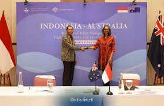
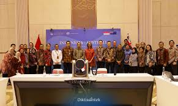

Kerjasama bilateral adalah kerjasama yang melibatkan 2 negara dengan tujuan yang saling menguntungkan. Kerjasama ini bisa dilakukan di bidang apa saja. Seperti, politik, ekonomi, keamanan, dan budaya. Hubungan kerjasama ini bersifat resmi dan biasanya diatur dalam perjanjian tertulis, dengan tujuan untuk mempererat persahabatan, meningkatkan pertumbuhan ekonomi, memenuhi kebutuhan masing-masing negara, dan menciptakan perdamaian.
 Dalam hal ini, ada beberapa contoh kerjasama bilateral yang telah dilakukan Indonesia untuk memenuhi SDGs ke-4 (Pendidikan yang Berkualitas). Dimana Kementerian Pendidikan Tinggi, Sains, dan Teknologi (Kemdiktisaintek) Indonesia dan Kedutaan Besar Australia telah menyelenggarakan Indonesia-Australia High-Level Policy Dialogue on Higher Education, Science, and Research yang pertama. Dialog yang dipimpin oleh Wakil Menteri Fauzan dan Kuasa Usaha Australia, Gita Kamath ini bertujuan untuk menyelaraskan prioritas bersama dan meningkatkan sinergi bilateral jangka panjang. Kedua pihak menekankan bahwa kolaborasi ini bukan hanya tentang kebijakan formal, tetapi juga untuk menciptakan peluang yang berdampak luas bagi masyarakat, dengan fokus pada hilirisasi riset dan inovasi. Sebagai tindak lanjut, kedua negara sepakat untuk melanjutkan dialog ini secara berkelanjutan guna memperkuat pendidikan tinggi dan riset sebagai pilar utama hubungan bilateral mereka.
dan Berdampak Bagi Sesama!✨🤝🎯